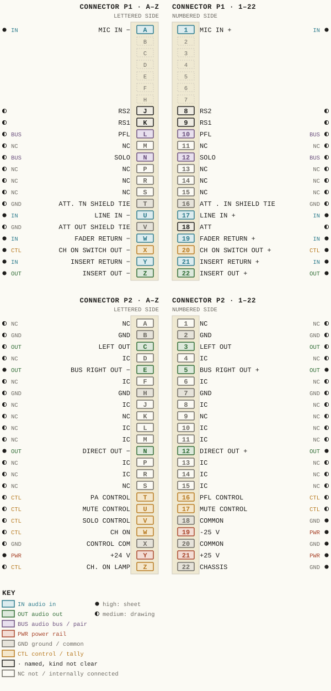
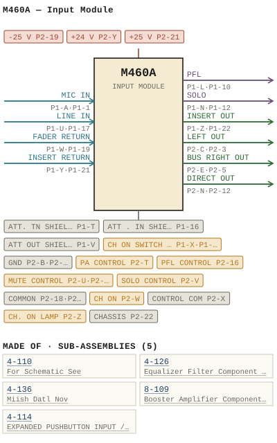

M460A — Input Module
| Type | module |
| Category | INPUT-PRE-AMPS |
| Try it | simulator & front panel · download package (zip) |
| Earliest dated evidence | 1976|9 — title-block date |
| Evidence | "DATE 8 DEC 76" in PUBLIC/Manuals + tech DOCUMENTS/Modules/M460A - Input Module.pdf |
| Confidence | high |
| All years found | 1976|9, 1977|10, 1979|12, 1983|16 |
| Variants | M460, M460B, M460C, M460D, M460E, M460F, M460K, M460L, M460LA, M460M, M460T |
| Folder | Modules/INPUT-PRE-AMPS/M460A |
Connections and circuit (ideal SPICE model)
Drawn live from its RTO-144 connections: run the generator, turn the gain, watch the VU. Open the netlist to see how the model is built.
Pictures


M460A.pinout.svg

M460A.connections.svg 1976 - M460A - 460-01-002 - CONTROL CONTROL COMMON.jpg
1976 - M460A - 460-01-002 - CONTROL CONTROL COMMON.jpg 1977 - M460A - 460-04-004 - KYYS CONNECTOR REAR VIEW.jpg
1977 - M460A - 460-04-004 - KYYS CONNECTOR REAR VIEW.jpg 1979 - M460A - P002.jpg
1979 - M460A - P002.jpg 1983 - M460A - P029 - 4-110.jpg
1983 - M460A - P029 - 4-110.jpg 1983 - M460A - P034 - 4-126.jpg
1983 - M460A - P034 - 4-126.jpg M460A - P002.jpg
M460A - P002.jpg 1976 - M460A - 4-110-02-001 - OMPONENT DESICN.jpg
1976 - M460A - 4-110-02-001 - OMPONENT DESICN.jpg 1976 - M460A - 4-110-06-001 - PRE-AMPIHP FILTER GCALE COMPONENT LAYOUT.jpg
1976 - M460A - 4-110-06-001 - PRE-AMPIHP FILTER GCALE COMPONENT LAYOUT.jpg 1976 - M460A - 4-126-02-001 - NEL EQUALIZER FILTER.jpg
1976 - M460A - 4-126-02-001 - NEL EQUALIZER FILTER.jpg 1976 - M460A - 4-126-06-001 - WAAD-DCCK SYSTBMS.jpg
1976 - M460A - 4-126-06-001 - WAAD-DCCK SYSTBMS.jpg 1976 - M460A - 4-136-06-002 - MOTHERBOARD LAYOUT GCALE.jpg
1976 - M460A - 4-136-06-002 - MOTHERBOARD LAYOUT GCALE.jpg 1976 - M460A - 460-04-008 - XTERNA CONTROI FUNCTIONS NOTE THAT THE.jpg
1976 - M460A - 460-04-008 - XTERNA CONTROI FUNCTIONS NOTE THAT THE.jpg 1976 - M460A - 8-109-02-001 - NCMINAL VALUE.jpg
1976 - M460A - 8-109-02-001 - NCMINAL VALUE.jpg 1976 - M460A - 8-109-02-002 - OUTPUT AMPLIFIER CKDE.jpg
1976 - M460A - 8-109-02-002 - OUTPUT AMPLIFIER CKDE.jpg 1976 - M460A - 8-109-06-001 - BOOSTER AMPLIFIER.jpg
1976 - M460A - 8-109-06-001 - BOOSTER AMPLIFIER.jpg 1976 - M460A - 8-109-06-002 - OUTPUT AMPLIFIER.jpg
1976 - M460A - 8-109-06-002 - OUTPUT AMPLIFIER.jpg 1976 - M460A - IMG_4064.jpg
1976 - M460A - IMG_4064.jpg 1976 - M460A - IMG_4066.jpg
1976 - M460A - IMG_4066.jpg 1976 - M460A - IMG_4068.jpg
1976 - M460A - IMG_4068.jpg 1976 - M460A - IMG_4069.jpg
1976 - M460A - IMG_4069.jpg 1976 - M460A - IMG_4070.jpg
1976 - M460A - IMG_4070.jpg 1976 - M460A - IMG_4071.jpg
1976 - M460A - IMG_4071.jpg 1976 - M460A - IMG_4072.jpg
1976 - M460A - IMG_4072.jpg 1976 - M460A - IMG_4073.jpg
1976 - M460A - IMG_4073.jpg 1976 - M460A - IMG_4074.jpg
1976 - M460A - IMG_4074.jpg 1976 - M460A - IMG_4075.jpg
1976 - M460A - IMG_4075.jpg 1976 - M460A - IMG_4078.jpg
1976 - M460A - IMG_4078.jpg 1976 - M460A - IMG_4079.jpg
1976 - M460A - IMG_4079.jpg 1976 - M460A - IMG_4080.jpg
1976 - M460A - IMG_4080.jpg 1976 - M460A - IMG_4081.jpg
1976 - M460A - IMG_4081.jpg 1976 - M460A - IMG_4082.jpg
1976 - M460A - IMG_4082.jpg 1976 - M460A - IMG_4084.jpg
1976 - M460A - IMG_4084.jpg 1976 - M460A - IMG_4085.jpg
1976 - M460A - IMG_4085.jpg 1976 - M460A - IMG_4086.jpg
1976 - M460A - IMG_4086.jpg 1976 - M460A - IMG_4087.jpg
1976 - M460A - IMG_4087.jpg 1976 - M460A - IMG_4088.jpg
1976 - M460A - IMG_4088.jpg 1976 - M460A - IMG_4091.jpg
1976 - M460A - IMG_4091.jpg 1976 - M460A - IMG_4093.jpg
1976 - M460A - IMG_4093.jpg 1976 - M460A - IMG_4095.jpg
1976 - M460A - IMG_4095.jpg 1976 - M460A - IMG_4097.jpg
1976 - M460A - IMG_4097.jpg 1976 - M460A - IMG_4098.jpg
1976 - M460A - IMG_4098.jpg 1976 - M460A - IMG_4100.jpg
1976 - M460A - IMG_4100.jpg 1976 - M460A - IMG_4103.jpg
1976 - M460A - IMG_4103.jpg 1976 - M460A - IMG_4105.jpg
1976 - M460A - IMG_4105.jpg 1976 - M460A - IMG_4107.jpg
1976 - M460A - IMG_4107.jpg 1976 - M460A - IMG_4109.jpg
1976 - M460A - IMG_4109.jpg 1976 - M460A - IMG_4110.jpg
1976 - M460A - IMG_4110.jpg 1976 - M460A - IMG_4112.jpg
1976 - M460A - IMG_4112.jpg 1976 - M460A - IMG_4114.jpg
1976 - M460A - IMG_4114.jpg 1976 - M460A - IMG_4115.jpg
1976 - M460A - IMG_4115.jpg 1976 - M460A - IMG_4116.jpg
1976 - M460A - IMG_4116.jpg 1976 - M460A - IMG_4117.jpg
1976 - M460A - IMG_4117.jpg 1976 - M460A - IMG_4119.jpg
1976 - M460A - IMG_4119.jpg 1976 - M460A - IMG_4120.jpg
1976 - M460A - IMG_4120.jpg 1976 - M460A - IMG_4121.jpg
1976 - M460A - IMG_4121.jpg 1976 - M460A - IMG_4122.jpg
1976 - M460A - IMG_4122.jpg 1976 - M460A - IMG_4123.jpg
1976 - M460A - IMG_4123.jpg 1976 - M460A - IMG_4125.jpg
1976 - M460A - IMG_4125.jpg 1976 - M460A - IMG_4126.jpg
1976 - M460A - IMG_4126.jpg 1976 - M460A - IMG_4128.jpg
1976 - M460A - IMG_4128.jpg 1976 - M460A - IMG_4129.jpg
1976 - M460A - IMG_4129.jpg 1976 - M460A - IMG_4132.jpg
1976 - M460A - IMG_4132.jpg 1976 - M460A - IMG_4134.jpg
1976 - M460A - IMG_4134.jpg 1976 - M460A - IMG_4135.jpg
1976 - M460A - IMG_4135.jpg 1976 - M460A - IMG_4136.jpg
1976 - M460A - IMG_4136.jpg 1976 - M460A - IMG_4138.jpg
1976 - M460A - IMG_4138.jpg 1976 - M460A - IMG_4139.jpg
1976 - M460A - IMG_4139.jpg 1976 - M460A - IMG_4141.jpg
1976 - M460A - IMG_4141.jpg 1976 - M460A - IMG_4142.jpg
1976 - M460A - IMG_4142.jpg 1976 - M460A - IMG_4145.jpg
1976 - M460A - IMG_4145.jpg 1976 - M460A - IMG_4146.jpg
1976 - M460A - IMG_4146.jpg 1976 - M460A - IMG_4148.jpg
1976 - M460A - IMG_4148.jpg 1976 - M460A - IMG_4149.jpg
1976 - M460A - IMG_4149.jpg 1976 - M460A - IMG_4150.jpg
1976 - M460A - IMG_4150.jpg 1976 - M460A - IMG_4151.jpg
1976 - M460A - IMG_4151.jpg 1976 - M460A - IMG_4152.jpg
1976 - M460A - IMG_4152.jpg 1976 - M460A - IMG_4154.jpg
1976 - M460A - IMG_4154.jpg 1976 - M460A - IMG_4155.jpg
1976 - M460A - IMG_4155.jpg 1976 - M460A - IMG_4156.jpg
1976 - M460A - IMG_4156.jpg 1976 - M460A - IMG_4158.jpg
1976 - M460A - IMG_4158.jpg 1976 - M460A - IMG_4160.jpg
1976 - M460A - IMG_4160.jpg 1976 - M460A - IMG_4162.jpg
1976 - M460A - IMG_4162.jpg 1976 - M460A - IMG_4163.jpg
1976 - M460A - IMG_4163.jpg 1976 - M460A - IMG_4165.jpg
1976 - M460A - IMG_4165.jpg 1976 - M460A - IMG_4167.jpg
1976 - M460A - IMG_4167.jpg 1976 - M460A - IMG_4168.jpg
1976 - M460A - IMG_4168.jpg 1976 - M460A - IMG_4170.jpg
1976 - M460A - IMG_4170.jpg 1976 - M460A - IMG_4173.jpg
1976 - M460A - IMG_4173.jpg 1976 - M460A - IMG_4174.jpg
1976 - M460A - IMG_4174.jpg 1976 - M460A - IMG_4175.jpg
1976 - M460A - IMG_4175.jpg 1976 - M460A - Input Module.jpg
1976 - M460A - Input Module.jpg 1976 - M460A - P001 - Title Page.jpg
1976 - M460A - P001 - Title Page.jpg 1976 - M460A - P003 - 1-1.jpg
1976 - M460A - P003 - 1-1.jpg 1976 - M460A - P004 - 1-2.jpg
1976 - M460A - P004 - 1-2.jpg 1976 - M460A - P005 - 2-1.jpg
1976 - M460A - P005 - 2-1.jpg 1976 - M460A - P006 - 2-2.jpg
1976 - M460A - P006 - 2-2.jpg 1976 - M460A - P007 - 2-3.jpg
1976 - M460A - P007 - 2-3.jpg 1976 - M460A - P008 - 2-4.jpg
1976 - M460A - P008 - 2-4.jpg 1976 - M460A - P009 - 2-5.jpg
1976 - M460A - P009 - 2-5.jpg 1976 - M460A - P010 - 3-1.jpg
1976 - M460A - P010 - 3-1.jpg 1976 - M460A - P011 - 3-2.jpg
1976 - M460A - P011 - 3-2.jpg 1976 - M460A - P012 - 4-1.jpg
1976 - M460A - P012 - 4-1.jpg 1976 - M460A - P013 - 4-2.jpg
1976 - M460A - P013 - 4-2.jpg 1976 - M460A - P014 - 4-3.jpg
1976 - M460A - P014 - 4-3.jpg 1976 - M460A - P015 - 4-4.jpg
1976 - M460A - P015 - 4-4.jpg 1976 - M460A - P016 - 4-5.jpg
1976 - M460A - P016 - 4-5.jpg 1976 - M460A - P017 - 4-6.jpg
1976 - M460A - P017 - 4-6.jpg 1976 - M460A - P018 - 8-109.jpg
1976 - M460A - P018 - 8-109.jpg 1976 - M460A - P019 - 8-109-1-1.jpg
1976 - M460A - P019 - 8-109-1-1.jpg 1976 - M460A - P020 - 8-109-1-2.jpg
1976 - M460A - P020 - 8-109-1-2.jpg 1976 - M460A - P021 - 8-109-1-3.jpg
1976 - M460A - P021 - 8-109-1-3.jpg 1976 - M460A - P022 - 8-109-2-1.jpg
1976 - M460A - P022 - 8-109-2-1.jpg 1976 - M460A - P023 - 8-109-2-2.jpg
1976 - M460A - P023 - 8-109-2-2.jpg 1976 - M460A - P024 - 8-109-2-3.jpg
1976 - M460A - P024 - 8-109-2-3.jpg 1976 - M460A - P025 - 8-109-2-4.jpg
1976 - M460A - P025 - 8-109-2-4.jpg 1976 - M460A - P028 - 8-109-2-5.jpg
1976 - M460A - P028 - 8-109-2-5.jpg 1976 - M460A - P030 - 4-110 - 1-1.jpg
1976 - M460A - P030 - 4-110 - 1-1.jpg 1976 - M460A - P031 - 4-110 - 2-1.jpg
1976 - M460A - P031 - 4-110 - 2-1.jpgPrice history
| Year | Kind | Price | Listed as | Effective | Source |
|---|---|---|---|---|---|
| 2005|38 | used market value | 250.00 | M460A Input | wbsps - website ARCHIVE/WBSPS 2008/ARCHIVE/old website/PriceGuide.htm | |
| 2006|39 | used market value | 250.00 | M460A Input | wbsps - website ARCHIVE/WBSPS 2008/ARCHIVE/jan 2006 shell/priceguide.htm |
Pinout & connections
Each contact as its own documents name it: 76 named (22 high, 54 medium confidence). An empty slot is a contact no page names. Hover a contact for its source; the table under the drawing lists them.
pinout (SVG) · connections (SVG) · pins (JSON)
Pin evidence — 76 contacts
| Pin | Signal | Kind | Confidence | Read from | Source |
|---|---|---|---|---|---|
| P1-A | MIC IN | audio in | high | rto-144 | M460A.rto144.json, p. 1 |
| P1-1 | MIC IN | audio in | high | rto-144 | M460A.rto144.json, p. 1 |
| P1-J | RS2 | named, kind not clear | medium | drawing rows | 1977 - M460A - 460-04-004 - KYYS CONNECTOR RE…, p. 1 “row 8 of the drawing, left of the pin column” |
| P1-8 | RS2 | named, kind not clear | medium | drawing rows | 1977 - M460A - 460-04-004 - KYYS CONNECTOR RE…, p. 1 “row 8 of the drawing, right of the pin column” |
| P1-K | RS1 | named, kind not clear | medium | drawing rows | 1977 - M460A - 460-04-004 - KYYS CONNECTOR RE…, p. 1 “row 9 of the drawing, left of the pin column” |
| P1-9 | RS1 | named, kind not clear | medium | drawing rows | 1977 - M460A - 460-04-004 - KYYS CONNECTOR RE…, p. 1 “row 9 of the drawing, right of the pin column” |
| P1-L | PFL | audio bus / pair | medium | drawing rows | 1977 - M460A - 460-04-004 - KYYS CONNECTOR RE…, p. 1 “row 10 of the drawing, left of the pin column” |
| P1-10 | PFL | audio bus / pair | medium | drawing rows | 1977 - M460A - 460-04-004 - KYYS CONNECTOR RE…, p. 1 “row 10 of the drawing, right of the pin column” |
| P1-M | NC | not / internally connected | medium | drawing rows | 1977 - M460A - 460-04-004 - KYYS CONNECTOR RE…, p. 1 “row 11 of the drawing, left of the pin column” |
| P1-11 | NC | not / internally connected | medium | drawing rows | 1977 - M460A - 460-04-004 - KYYS CONNECTOR RE…, p. 1 “row 11 of the drawing, right of the pin column” |
| P1-N | SOLO | audio bus / pair | medium | drawing rows | 1977 - M460A - 460-04-004 - KYYS CONNECTOR RE…, p. 1 “row 12 of the drawing, left of the pin column” |
| P1-12 | SOLO | audio bus / pair | medium | drawing rows | 1977 - M460A - 460-04-004 - KYYS CONNECTOR RE…, p. 1 “row 12 of the drawing, right of the pin column” |
| P1-P | NC | not / internally connected | medium | drawing rows | 1977 - M460A - 460-04-004 - KYYS CONNECTOR RE…, p. 1 “row 13 of the drawing, left of the pin column” |
| P1-13 | NC | not / internally connected | medium | drawing rows | 1977 - M460A - 460-04-004 - KYYS CONNECTOR RE…, p. 1 “row 13 of the drawing, right of the pin column” |
| P1-R | NC | not / internally connected | medium | drawing rows | 1977 - M460A - 460-04-004 - KYYS CONNECTOR RE…, p. 1 “row 14 of the drawing, left of the pin column” |
| P1-14 | NC | not / internally connected | medium | drawing rows | 1977 - M460A - 460-04-004 - KYYS CONNECTOR RE…, p. 1 “row 14 of the drawing, right of the pin column” |
| P1-S | NC | not / internally connected | medium | drawing rows | 1977 - M460A - 460-04-004 - KYYS CONNECTOR RE…, p. 1 “row 15 of the drawing, left of the pin column” |
| P1-15 | NC | not / internally connected | medium | drawing rows | 1977 - M460A - 460-04-004 - KYYS CONNECTOR RE…, p. 1 “row 15 of the drawing, right of the pin column” |
| P1-T | ATT. TN SHIELD TIE | ground / common | medium | drawing rows | 1977 - M460A - 460-04-004 - KYYS CONNECTOR RE…, p. 1 “row 16 of the drawing, left of the pin column” |
| P1-16 | ATT . IN SHIELD TIE | ground / common | medium | drawing rows | 1977 - M460A - 460-04-004 - KYYS CONNECTOR RE…, p. 1 “row 16 of the drawing, right of the pin column” |
| P1-U | LINE IN also: LINE (drawing rows) | audio in | high | rto-144 | M460A.rto144.json, p. 1 |
| P1-17 | LINE IN also: LINE IN (drawing rows) | audio in | high | rto-144 | M460A.rto144.json, p. 1 |
| P1-V | ATT OUT SHIELD TIE | ground / common | medium | drawing rows | 1977 - M460A - 460-04-004 - KYYS CONNECTOR RE…, p. 1 “row 18 of the drawing, left of the pin column” |
| P1-18 | ATT | named, kind not clear | medium | drawing rows | 1977 - M460A - 460-04-004 - KYYS CONNECTOR RE…, p. 1 “row 18 of the drawing, right of the pin column” |
| P1-W | FADER RETURN also: BOOSTER IN (drawing rows) | audio in | high | rto-144 | M460A.rto144.json, p. 1 |
| P1-19 | FADER RETURN also: BOOSTER (drawing rows) | audio in | high | rto-144 | M460A.rto144.json, p. 1 |
| P1-X | CH ON SWITCH OUT also: CH ON OUT (drawing rows) | control / tally | high | rto-144 | M460A.rto144.json, p. 1 |
| P1-20 | CH ON SWITCH OUT also: CH ON OUT (drawing rows) | control / tally | high | rto-144 | M460A.rto144.json, p. 1 |
| P1-Y | INSERT RETURN also: CH ON (drawing rows) | audio in | high | rto-144 | M460A.rto144.json, p. 1 |
| P1-21 | INSERT RETURN | audio in | high | rto-144 | M460A.rto144.json, p. 1 |
| P1-Z | INSERT OUT | audio out | high | rto-144 | M460A.rto144.json, p. 1 |
| P1-22 | INSERT OUT | audio out | high | rto-144 | M460A.rto144.json, p. 1 |
| P2-A | NC | not / internally connected | medium | drawing rows | 1977 - M460A - 460-04-004 - KYYS CONNECTOR RE…, p. 1 “row 1 of the drawing, left of the pin column” |
| P2-1 | NC | not / internally connected | medium | drawing rows | 1977 - M460A - 460-04-004 - KYYS CONNECTOR RE…, p. 1 “row 1 of the drawing, right of the pin column” |
| P2-B | GND | ground / common | medium | drawing rows | 1977 - M460A - 460-04-004 - KYYS CONNECTOR RE…, p. 1 “row 2 of the drawing, left of the pin column” |
| P2-2 | GND also: CH ON (schematic) | ground / common | medium | drawing rows | 1977 - M460A - 460-04-004 - KYYS CONNECTOR RE…, p. 1 “row 2 of the drawing, right of the pin column” |
| P2-C | LEFT OUT also: LEFT OUT (schematic) | audio out | medium | drawing rows | 1977 - M460A - 460-04-004 - KYYS CONNECTOR RE…, p. 1 “row 3 of the drawing, left of the pin column” |
| P2-3 | LEFT OUT | audio out | medium | drawing rows | 1977 - M460A - 460-04-004 - KYYS CONNECTOR RE…, p. 1 “row 3 of the drawing, right of the pin column” |
| P2-D | IC | not / internally connected | medium | drawing rows | 1977 - M460A - 460-04-004 - KYYS CONNECTOR RE…, p. 1 “row 4 of the drawing, left of the pin column” |
| P2-4 | IC | not / internally connected | medium | drawing rows | 1977 - M460A - 460-04-004 - KYYS CONNECTOR RE…, p. 1 “row 4 of the drawing, right of the pin column” |
| P2-E | BUS RIGHT OUT also: RIGHT (drawing rows) | audio out | high | rto-144 | M460A.rto144.json, p. 1 |
| P2-5 | BUS RIGHT OUT also: RIGHT OUT (drawing rows) | audio out | high | rto-144 | M460A.rto144.json, p. 1 |
| P2-F | IC | not / internally connected | medium | drawing rows | 1977 - M460A - 460-04-004 - KYYS CONNECTOR RE…, p. 1 “row 6 of the drawing, left of the pin column” |
| P2-6 | IC | not / internally connected | medium | drawing rows | 1977 - M460A - 460-04-004 - KYYS CONNECTOR RE…, p. 1 “row 6 of the drawing, right of the pin column” |
| P2-H | GND | ground / common | medium | drawing rows | 1977 - M460A - 460-04-004 - KYYS CONNECTOR RE…, p. 1 “row 7 of the drawing, left of the pin column” |
| P2-7 | GND | ground / common | medium | drawing rows | 1977 - M460A - 460-04-004 - KYYS CONNECTOR RE…, p. 1 “row 7 of the drawing, right of the pin column” |
| P2-J | IC | not / internally connected | medium | drawing rows | 1977 - M460A - 460-04-004 - KYYS CONNECTOR RE…, p. 1 “row 8 of the drawing, left of the pin column” |
| P2-8 | IC | not / internally connected | medium | drawing rows | 1977 - M460A - 460-04-004 - KYYS CONNECTOR RE…, p. 1 “row 8 of the drawing, right of the pin column” |
| P2-K | NC | not / internally connected | medium | drawing rows | 1977 - M460A - 460-04-004 - KYYS CONNECTOR RE…, p. 1 “row 9 of the drawing, left of the pin column” |
| P2-9 | NC | not / internally connected | medium | drawing rows | 1977 - M460A - 460-04-004 - KYYS CONNECTOR RE…, p. 1 “row 9 of the drawing, right of the pin column” |
| P2-L | IC | not / internally connected | medium | drawing rows | 1977 - M460A - 460-04-004 - KYYS CONNECTOR RE…, p. 1 “row 10 of the drawing, left of the pin column” |
| P2-10 | IC | not / internally connected | medium | drawing rows | 1977 - M460A - 460-04-004 - KYYS CONNECTOR RE…, p. 1 “row 10 of the drawing, right of the pin column” |
| P2-M | IC | not / internally connected | medium | drawing rows | 1977 - M460A - 460-04-004 - KYYS CONNECTOR RE…, p. 1 “row 11 of the drawing, left of the pin column” |
| P2-11 | IC | not / internally connected | medium | drawing rows | 1977 - M460A - 460-04-004 - KYYS CONNECTOR RE…, p. 1 “row 11 of the drawing, right of the pin column” |
| P2-N | DIRECT OUT also: DIRECT (drawing rows) | audio out | high | rto-144 | M460A.rto144.json, p. 1 |
| P2-12 | DIRECT OUT also: DIRECT (drawing rows) | audio out | high | rto-144 | M460A.rto144.json, p. 1 |
| P2-P | IC | not / internally connected | medium | drawing rows | 1977 - M460A - 460-04-004 - KYYS CONNECTOR RE…, p. 1 “row 13 of the drawing, left of the pin column” |
| P2-13 | IC | not / internally connected | medium | drawing rows | 1977 - M460A - 460-04-004 - KYYS CONNECTOR RE…, p. 1 “row 13 of the drawing, right of the pin column” |
| P2-R | IC | not / internally connected | medium | drawing rows | 1977 - M460A - 460-04-004 - KYYS CONNECTOR RE…, p. 1 “row 14 of the drawing, left of the pin column” |
| P2-14 | IC | not / internally connected | medium | drawing rows | 1977 - M460A - 460-04-004 - KYYS CONNECTOR RE…, p. 1 “row 14 of the drawing, right of the pin column” |
| P2-S | NC | not / internally connected | medium | drawing rows | 1977 - M460A - 460-04-004 - KYYS CONNECTOR RE…, p. 1 “row 15 of the drawing, left of the pin column” |
| P2-15 | IC | not / internally connected | medium | drawing rows | 1977 - M460A - 460-04-004 - KYYS CONNECTOR RE…, p. 1 “row 15 of the drawing, right of the pin column” |
| P2-T | PA CONTROL | control / tally | medium | drawing rows | 1977 - M460A - 460-04-004 - KYYS CONNECTOR RE…, p. 1 “row 16 of the drawing, left of the pin column” |
| P2-16 | PFL CONTROL | control / tally | medium | drawing rows | 1977 - M460A - 460-04-004 - KYYS CONNECTOR RE…, p. 1 “row 16 of the drawing, right of the pin column” |
| P2-U | MUTE CONTROL | control / tally | medium | drawing rows | 1977 - M460A - 460-04-004 - KYYS CONNECTOR RE…, p. 1 “row 17 of the drawing, left of the pin column” |
| P2-17 | MUTE CONTROL | control / tally | medium | drawing rows | 1977 - M460A - 460-04-004 - KYYS CONNECTOR RE…, p. 1 “row 17 of the drawing, right of the pin column” |
| P2-V | SOLO CONTROL | control / tally | medium | drawing rows | 1977 - M460A - 460-04-004 - KYYS CONNECTOR RE…, p. 1 “row 18 of the drawing, left of the pin column” |
| P2-18 | COMMON also: CONTROL COM (drawing rows) | ground / common | high | rto-144 | M460A.rto144.json, p. 1 |
| P2-W | CH ON | control / tally | medium | drawing rows | 1977 - M460A - 460-04-004 - KYYS CONNECTOR RE…, p. 1 “row 19 of the drawing, left of the pin column” |
| P2-19 | -25 V also: 25V (drawing rows) | power rail | high | rto-144 | M460A.rto144.json, p. 1 |
| P2-X | CONTROL COM also: CTL COM (schematic) | ground / common | medium | drawing rows | 1977 - M460A - 460-04-004 - KYYS CONNECTOR RE…, p. 1 “row 20 of the drawing, left of the pin column” |
| P2-20 | COMMON also: COMMON (rto-144); 25V COM (drawing rows) | ground / common | high | rto-144 | M460A.rto144.json, p. 1 |
| P2-Y | +24 V also: +24V (drawing rows); +24V (schematic) | power rail | high | rto-144 | M460A.rto144.json, p. 1 |
| P2-21 | +25 V also: +25V (drawing rows) | power rail | high | rto-144 | M460A.rto144.json, p. 1 |
| P2-Z | CH. ON LAMP | control / tally | medium | drawing rows | 1977 - M460A - 460-04-004 - KYYS CONNECTOR RE…, p. 1 “row 22 of the drawing, left of the pin column” |
| P2-22 | CHASSIS | ground / common | high | rto-144 | M460A.rto144.json, p. 1 |
Dates found in the documents
| Year | Kind | Text | File |
|---|---|---|---|
| 1976|9 | title-block date | DATE 8 DEC 76 |
1976 - M460A - 460-01-002 - CONTROL CONTROL COMMON.jpg |
| 1976|9 | title-block date | DATE 8 DEC 76 |
1976 - M460A - Input Module.pdf |
| 1977|10 | title-block date | DATE JaN 77 |
1977 - M460A - 460-04-004 - KYYS CONNECTOR REAR VIEW.jpg |
| 1979|12 | manual issue date | MANUAL I SSUE ' 3 :// tp J AN. 1979 |
1979 - M460A - Input Module.pdf |
| 1979|12 | manual issue date | MANUAL ISSUE #3 JAN . 1979 |
1979 - M460A - P002.jpg |
| 1983|16 | month & year | SEPTEMBER 1983 |
1983 - M460A - P029 - 4-110.jpg |
| 1983|16 | manual issue date | ISSUE #2. SEPTEMBER 1983 |
1983 - M460A - P034 - 4-126.jpg |
| 1979|12 | manual issue date | MAnUAL ISSUE Jan; 1979 |
M460A - P002.jpg |
Physical manual inventory
| Item | Location | Status | Scanned |
|---|---|---|---|
| M460A - Input Module | PDF - Already scanned |
Documents (2)
| Year | File | |
|---|---|---|
| 1976|9 | 1976 - M460A - Input Module.pdf | note |
| 1979|12 | 1979 - M460A - Input Module.pdf | note |
Photos & scans (129)


Sub-assemblies & parts used (5)
| Item | What | Family | Year | How we know |
|---|---|---|---|---|
| 4-110 | For Schematic See | Sub-assemblies (n-nnn) | 1974|7 | drawing filed with it |
| 4-126 | Equalizer Filter Component Assembly | Sub-assemblies (n-nnn) | 1972|5 | drawing filed with it |
| 4-136 | Miish Datl Nov | Sub-assemblies (n-nnn) | drawing filed with it | |
| 8-109 | Booster Amplifier Component Layout | Sub-assemblies (n-nnn) | 1974|7 | drawing filed with it |
| 4-114 | EXPANDED PUSHBUTTON INPUT / SCHEMATIC | Sub-assemblies (n-nnn) | 1975|8 | named in its manual |
Parts list — board 1979 - M460A - Input Module (4 parts)
From 1979 - M460A - Input Module.pdf; also in timelines/data/bom.csv.
| Ref | Part | Value | Manufacturer | Mfr part no. |
|---|---|---|---|---|
| R33 | Res i ~ t or %W 51 4 70 k | Ph I! 1 ps | ||
| R43 | Resisto r 1/8'1 51 620 | |||
| RA5 | (Delete) | |||
| R54 | ( Oelete) |
Named in other drawings & documents (1)
| File | Page |
|---|---|
| 19xx - RTO-144 - Module RTO-144 Jumper calculator.xlsx | 1 |
From the manuals
Each manual split into its sections. Text that is the same in many Ward-Beck manuals (warranty, address, standard notes) is kept once on the Boilerplate page and linked.
General description (1)
Description — 180 words · 1976 - M460A - P030 - 4-110 - 1-1.jpg, page 1
4-110 PREAMP /HIGH-PASS FILIER The 4-110 preamplifier printed circuit board designed be used as an internal component the WBS M460 and M461 input module series. Preceding the 4-110 input transformer T1 _ The secondary winding connected terminals and E2 through 05 form non - inverting operational amplifier using discrete comiponents The feedback resistance defining the gain the ampli - fier consists R6 R7 , R8 weli the sensitivity potentiometer external the 4-110 and accessible tne front panel (he M460 M461 respectively continuous range dB provided with the sensitivity potentiometer The output the preamplifier connected an activc High-Pass filter with roll-off 12 dB/octave_ The filter components consist 21 , C8 C9 C1o, R13, R14 Js wel as the ganged roll-off potentio- meter marked HP accessible the front panel the M460 M461 The filter can be deactivated by rotating the HP potentiomneter fully counterclockwise The HP potentiometer calibrated achieve continuous variable dB roll-off point from Hz 250 Hz .
volts supply voltage der ved internally within the M46o/ _ M461 module and applied pins E4 and E9 the 4-110 . 4-110 1-1
- source: 1976 - M460A - P030 - 4-110 - 1-1.jpg, p. 1
Specifications (1)
Technical Data — 402 words · 1979 - M460A - Input Module.pdf, page 3
M450A INPUT MOOU LE
Input Se nsitivit ies : Line : -20 to +1 0 dBm (ref . 50D ohm sou rce) . Mi c Pad: -5 0 to -20 dBm ( ref . 150 ohm sou rce) . Mlc: -70 to - 40 dBm (ref . 150 ohm sou rc e) .
Freq ue ncy Response : ro.as dB from 30 Hz to 20 kHz . (E qu al ize r i n bypass po s t tt on } .
Noise : -125 d8m EIN at max im um SENSITI VITY (20 Hz to 20 kHz ) .
Harmonic Disto rtio n : Less tha n 0 .251 THO from 30 Hz to 20 ktlz at +28 d8m o r l e s s. Less th an o. a at 1 kHz at +28 dBm o utput .
Sou rce I mpe d a nc e s: Line : 150/600 ohms , ba lan c e d/ unba l a n c ed. Mic : 150 ohms , ba la nc e d/un bala nc e d.
I np ut I mpe d a nc e s : line : 30,00 0 ohms . Mi c : 1 ,500 ohms .
Outp ut Impedanc e: Less tha n 100 ohms (a t outputs of 8 - 109 or8 -109 A amplifie rs on ly) .
Load I mpe d a nc e : 600 ohms , balanced (at inse rt io n point) .
Outp ut Level : -10 dBm nomin a l , +30 dBm max i mum. (At outp uts of 8 -109 or 8· I09A amplif i ers only.) a .c
Pha s ing : I n pu t a nd output ter minals desig nated ps
by numbe rs a re in phase . BS
Power Re q ui re me n t s: ±25 vo lts dc , 90 mA nominal , 250 mA W
maximum . :// tp ht
1- 1
WARD -S ECK SYSTEMS LTD .
TECHNI CAL DATA
M46DA INPUT MODULE
Allbient Te .per~ture: 0 to 60 degrees Cels ius . u t eens tees : 1.6 - wide X 14. 15 " high X 6.5" deep . (41 . .. X 360 •• X 165 • • 1.
a .c ps BS W :// tp ht
1-'
W A R D · B E CK SY S T E MS LTD
- source: 1979 - M460A - Input Module.pdf, p. 3
Circuit description (2)
Circuit Description — 2373 words · 1979 - M460A - Input Module.pdf, page 5
M4 6DA INPUT MODULE
The M460A is a combination I NPUT/ EQUALi ZER module, designed to accept input signals originating from either a microphone or a line sou rce . The unit p rocesses the i np ut s ig nal as r e q u i r e d and routes it to the appropr iate points withi n the mixing console system .
~ The I NPUT SELECTOR s wi t c h SWl provides a choice of con necting t he input t r a ns ro rme r Tl to eithe r the MICROPHON E source ~ t r ec t ly , or v t <I <I 20 dB PAD. . I neither CHe , the input i mpede nc e of the un it is 1 0 t t s e s h i ghe r tha n the source imp ed ance . In t he LiNE positio n, t he M460A opera tes as a bridging amplif ie r , p resenting 30 k ohm imp eda nce to the source . Both MIe and LiN E i nputs a r e transformer coupled . With the I NPUT SELECTOR in the OFF positio n , all inp uts are disconnected a nd the module input is terminated.
Preampli fier The seco nd ary s ide of T1 i s c o nne c t e d to th e 4-110 Pr eamp/ High .pass f11 t e r . The 4- 110 serves a s a f c w- no t se preamp an d r ai s e s the i npu t leve ls suf f icie ntly for furthe r or oce s s t ng wi t h i n the ccns o I e system . SENSITIV ITY co ntrol R12 pe rmits con t i n uous l e ve l adj ustment of al l input s ig nals, allowing a total ran ge of 30 dB . HIGH-PASS Filte r Switch SW17 is incorporated i n the HIGH-PASS filter contro l RI O/1 1. With RI0/11 posit io ned f u ll y counterclockwise , SW17 passes the outp ut o f the 4-110 directly to the equ al i ze r in s e r t s wi tch SW13. Once RIO/ll i s rot ated away f rom the ext reme coun terc loc kwise pos it ion , a 12 da/cc t a ve h igh -pass fi 1 ter is inse rted . The -3 dB roll off point is continuous ly adjustable from 25 to 250 Hz . a .c
EQUALIZER Section ps
The output of the 4-110 preamplifie r is routed to one of BS
the nor ma ll y closed co ntacts of the EQUALIZER I NSERT switch W
SIl13 to allow bypassing of the equal izer . Add iti o nally , ://
the preamp output is f e d to Zl , the f irst of fo ur cascaded summi ng a mpl t r t a r s Zl through Z4 . tp ht
2-1
CIRCUIT DESCRIP TION " 460A INPUT MODULE
II th rough l 4 serve as . h l ng an d t s ol a t ton a. pl H l e r s . They a re u s e d to . Ix t he prl .ary input s i gnal wit h a co rrection sig nal de rived fro . t he outputs of t he 4- 126 fil te r networks, re sulting In r a i s in g o r lowe ring the l e vel o f selected po rt io ns of t he eud t c s pec t r ue , Add itionally . the y t s et e t e the filte r networks fr om ea ch ot he r a nd prev e nt tn t e r ec t t c n betwee n the e , resu lt in g i n a c c u r e t e <lnd r ep e a t eble equa liz i ng pe rfo r mance . The CUT/BOOST co ntro ls R21 , RZ2 an d R23 fe e d <In I n -phase o r out-of-p hase p r c po r t t u na I sig na l to t he buffer ampl ifie rs lS . l6 <ln d l8 r es c e c t tvet y , The l ev el of the si gnal fed to th e buffe rs i s dependent o n th e CUT/B OOST c o n t r o l s etti ng with maximum l evel occurring <I t e i t he r end of the pote nti ometer , and a null setti ng at the pot entiometer mi d - pos it i on . Fu l l c t oc kwt s e or full c ounter cl o ckw ise po t e nt i ome t e r se t t i ngs will r e sult i n the maximu m equa l iz ation of ...15 dB a nd -1 5 dB r e s pe ct ive ly. The outp uts of b u ff e r amplifie rs lS , l6 a nd 28 are routed to the 4 -126 p r i nted ci rc uit board whic h co n t ai ns t h r e e ba nd- pa ss fi lter s co rrespond i ng to each of t he t hr ee secti o ns of the equa lizer . The HIGH FREQUENCY sect ion of the un i t provides SHElVING t ype of eque l t ze t t on , R2 1 de te retne s the a.ount of CUT o r BOOST with a total r a nge fro _ -1 5 t o +15 dB. Frequenc y is contin- uou sl y ad justab le fr o. 1 . 6 t o 2 5 kHz by Rl /R2 . The frequen cy ul1brati on refers to the 3 dB r o llo f( po in t whe n the unit Is ope rating a t t he . lI( i .. u. availab le CUT or BOOST of 15 d B. The HID FREQUENCY equal iutlon i s adjus ted by R4/ RS, c overing a fre quency rang e fro ll 0.4 t o 6. 4 kHz. CUT/B OOST i s c ont r oll ed by RZ2. R6 adjusts the Q- fa c t o r . Positive or negative be ll - sh<lped PEAKI NG eqve t t z e rt on is appliub le i n the . Id - f r eq ue ncy r <ln ge . a .c
The lOW FREQUENC Y equa lizati on op erates s i lllih rl y to the high ps
f requen cy sectio n . R7/R8 ad justs the freq uency NAge fro lll BS
25 to 400 Hz whil e R23 cont rol s CUT o r BOOST. W :// tp ht
a-a
M460A INPUT MOOULE
The three signa ls which lea ve the 4 -1 26 filte r ar e " c or r e ct i o n s t qna f s" eithe r t n- phe s e o r 160 deg rees out-of-phase with tile equa lizer input and band -pas s limited a s determ ined
- source: 1979 - M460A - Input Module.pdf, p. 5
Circuit Description — 212 words · 1976 - M460A - P035 - 4-126 - 1-1.jpg, page 1
4-126 EQUALIZER FILTER AMPL IFIER The 4-126 equalizer filter amp lifier printed circuit board utilized as an internal component certain WBS 460 series equalizer modules. The 4-126 comprises three independent state variable filter networks designed operate the Low Frequency . Mid Frequency and High Frequency bands the audio spectrum respectively Each these three filter sections functions pass shaped portion the audio spectrum thus generating correction signal= be summed with the primary ignal passing through the module_ In conjunction with components external the 4-126 and Part the main module, possible control the different parameters equalization indepen - dently each other such Js frequency boost/cut and Each the three filter networks consists three operational ampli- fiers one which operates the summing rode, with the [Wo others functioning as integralors_ In the summing amplifier, the outputs the [Wo integrators are mixed with the original filter output signal , the compound output turn being fed back the integrating amplifiers Depending upon where the signa inserted or withdrawn from this set three operationai amplifi ers, band-pass; high pass, low- pass characteristics are achieved With the appropriate external circuitry generate the 4-126 can be used BAND-PASS within each BAND REJECTION characteristics the three frequency bands Low-PASS positive or negative SHELVING characteristics HIGH-PASS positive characteristics negative SHELVING 4-126 1-1
- source: 1976 - M460A - P035 - 4-126 - 1-1.jpg, p. 1
Maintenance & alignment (1)
Adjustment — 83 words · 1976 - M460A - 460-04-008 - XTERNA CONTROI FUNCTIONS NOTE THAT THE.jpg, page 1
contro RI/2 Cont nuous variable rom [0 25 kHZ. The bra Ton def nes Ehe corner Fom ene max mum ava Table SheLving Boost cupoor 3.26412.8 HF HIGH FREQUENCY ~sectjorro boosticut controi R2I Continuous Iy iabl 15 dB to +15 aB . Sets gain loss of Yafigb #requency conten the program materia with reference Ene nomina Teve Mid FREQUE NcY S&C E ion.
Q AdJUSTMENT R6 : lows vary che 0-Factor the PEAK |NG ter for ues rom KHI Mid FREQUENcY section FrequencY
Parts list (text) (4)
Parts List — 1287 words · 1979 - M460A - Input Module.pdf, page 26
8 ·109 AMPLIFIER SERIES
All pa rts a s per 8 -109 except a s no t e d be low PART OESCRIPTION HFG MFG PART NUM8 ER
gl Capa~itor 4 .! pF Ph! lfpS 2ZZ2 . 6~8 -094 78
R15 Resisto r \ W 51 5 10
All pa rts as per 8 ·109 except as noted be low PART OESCRIPTION HFG MFG PART NUMBER
gl Capa~itor 4.~ p F 2222 -6~8 -09 478
R15 Resistor \iW 51 2K4
a .c
W8S r ecommends the use of rep lacement parts made by t he ps
specifi ed manufacturers f o r con tinued optfmUIl equipment BS
performa nc e . W :// tp ht
8-109 -2 -5
WARD -SE CK S YSTEM S LTD .
4-1 10 PRE A MP/H IG H_PASS FI LTER
a .c ps BS
~ W
sePTE MBER 1963 :// tp ht
CIRCUIT OESCR IP TION
4 _110 P REAMP/HI GH_PASS F ILTE R
The 4 ·110 pr eamp lifi er i s a p rin ted circu i t bo.Iord d e s ig n e d to be u sed a s a n i n le rn a l comPOl\en t of th e was 114460 and 114461 inpu t mod u l e ser ies . Preceding t he 4 · 110 Is In pu l Iran sf orme .. Tl.
Th e secon da r)' winding o f Tl i s con nec le d to t e r mi n al s E I and E2. 0 1 Ih ro u g h 05 form II. n on _inv erting OPe r a ti on a l a mp li f ier , u !!ing d i5Cret e com pone n t!! . Th e feedback r e si sle n c e d efining t h e g a in of l he a mpl i - fi er con !!i!!l!! of R6 , R7, RS as well e s th e Sen!!i l ivl t)' po ten t iome te r e"t erna l 10 Ihe 4 -1 10 end eeeess t ere al Ihe fron t pe n el o f l h e M460 0" M461 ..e sp ec l i v e ly . " con ti n uo u!! .. a n ge o f 30 dB is p ro v ided wi th I h e se ns i l i v i t y po ten l lome te r-,
Th e ou tpu t o f t h e p ..eemp lifl e r Is con nec ted to a n a c live High_Pa ss fl lt e .. w it h r-o t l-off of 12 dB /oc leve . Th .. fl it e r- compon l!n t s con sis t o f Z I , C8 , C9 , Cl0 , R I ), R 14 e s we ll li S t h e g a n g ed ..o i l -o ff po ten tio- me te .. ma r-ked HP , a c c e s si bl e a t lh e fro n l pa nel o f t h e "146 0 or M4 61 . Th e f il le r C lln be d e a cti v at e d by ro tat i n g t h e HP po ten tiometer fu l ly ec un re-c tcc k w vse • Th e HP potentlome te .. Is cal ib rate d 10 ac h ie v e a con tinuou s ly v a riab le ) dB ro l l _o ff poin t f ..om 25 Hz to 250 Hz .
A +/-21 vo l I!! su pply voltage Is de.. iv ed ;nlern.. lly within the M46O/- M46 1 mod ule .. nd .. pplied to pin!! E4 .. nd E9 of Ihe 4 _1 10 .
a .c ps BS W :// tp ht
WARD - BECK S YS T EMS LTD.
F ILTE R CHARAC TER iS TICS
.~ I'O PREAMP /H IGH_PASS FILTER
" fR EQU EN C Y I N HE R TZ a .c ps BS W :// tp ht
W A R D - B E C K S YSTEM S LTD .
P....RTS LIS T
4 _110 PRE ....MP/HIGH _P ....SS F ILTER
MFG P....RT NUMBER
ct Cap~cilor sec ,F Philips 2222 -630-03561 C2 41 pF 2222-6J8 -~79
,. OJ
cs 47 pF 150 u F /IO V 10 pF ,-, Philips TJ9ClEI S1MOI0....S 2222-638-10 109
ce 10 u F/2S v cr to ...F/2SV ca 0 .' u F/ IOO V 344CH CO 0 .068 ,F :=~:~~s " """ C092_MC_ lOO_683K COO 0 .033 of C092 - MC- 100-333K
CO, 33 pF Philip s 2222 _638 _5833 9 eta JJ u F / l0 v
- source: 1979 - M460A - Input Module.pdf, p. 26
Parts List — 427 words · 1976 - M460A - Input Module.pdf, page 35
4FE EoL: 17F7 F LtE7 AUFlIFIER DCe~Riptiom HUMOCR Resistor Philint deleta Resiaic dele FiaaELt Prilips 4-126
WAFC BECK 3ystems PARIS Lust L- ZC EnuaiCER IFIER PCAT DESCRIPTIDN ikt AYk Juaialar philipa Gelete Unicorate ceut Mcnmi IMut IMtasaN Mnun LhI-SUN rccommcnas mentnnacticery FedWcemcn Jaris made spcciilco FctI nLna FFJIITIL AIE IeITTAM nercmancc 4-126 Araitar
INput Selector itch Sal; sclects Hicrcohone difect, ciccophone Farn Ttama aouFsa 4a60' (RAD OfF Phise Sniecn Hnen dcpressed gai:ch Ki Cevers polarity cutolt siana| rclative 'rout operate aa6ccnarao (high Pass F97"c0_ cunleo Rioau Gouene "e Cor nuous 29]"Htrenf,88r cu:-Dft Joinc (ror 25 250 HZ. contco] Fulla EE lerontco gcoofd38 d continlols * control rangc irout {ourccs Public ADDrESs iritce oueprt 6cna switch ccnfesseo OiDu 2501 public ADDREss LEVEL dULpUT conero| Rib/1ye Controls Ieve | (PRE Post Public Adoress Hdncn cnccse point Pjelic AQUaess5 5 i qna| Grranr prir (Pre5 a[er IPosti cnannc Fader FOLddAck LEVEL control Ris'15 [ Autour Asn controls evci PA & FB PRE Past euidbe atcr 9h1 Anows chuoie Rick - poinc FOLOBAck Gigno eitrer rio IPRE Jfeer {PasTI crannc fadcr . CFaloaack switcnet depressed, oucpUt Iecn 5/9n0 Rev SEND LeveL Ccacrc 317/182 Coterms oucpu DuEE' Rev SEND Jepressed addtcpr ccNGS DuEPUF DuC Aecab = Si4na | itlec Swicr PRE'Pasi KE" Snd Bhfcn aoat Cnoos JE- REv 5E%p point 3onc Prior KPHE)F afcCi (Past) carnngi {adef= FREQUEYCT S8c{i07, FAEmmt ADJUSTFEMT Concro| Lont Fcce variJdc rom Lat caitretior Tires conte FrCM ilab |e Shelvit F@ms Eu8oiz: FrequE"CY sectton {mosucut Lontinvols / Fco 7a5{3b Ban Frequenc content materiai with reterence contco rqram Taeque "CY Fociog cd ADjutren R6: c45 PEAK | G Filter Pid Freque"Cy Gccdc Femmet ADjustvimt Cont inuolsi arac conkrz] cilibe Ccntcr %3ki Fequency DcA-aane Goonkc Cunve Fammtt {cc:4 BiISTCut Continuousiy able From Sizer8. 4ain ori Frcquenc, conecrt proaram reference 7odinj Frlouinct Fcci Ot Freoacy adjusTKENT A7 B vortjblc citibie Tnes corncr JWaele SHEL"LNG GDdS FrEucNCT Gecton_ Fddst cut Concinuc_; riablo Freclency Contcm[ ecmA reterera Jeminu contco, ~dorot ecWlizca MSERT Iwirch Mntt depressed, Knit switcn Wnsert Equil IZEa" Jer nto sianz Darn Jctviter Ji0C aled SCE65 8tizec5 hhor ~Llejsed, irJut 3 jassud Dirccciy 41094 Guowt 4is. CcntrD E |ons Decacon nneo MANc bLics ctt cocnne ianj| Wi#u Pan erite Swil; dncn dedressou enadie PA" control. cHANNeL awiLch 5w21 Ledremeo FeC0 6onc CutciI Lt | SoLo dunomas 0442 '5w21 EcL(ppeC contoces provid4 excrna CstErci {unctiOns . Ilat DuLDUE Fdliec Krolcr PAN PRe-Fade-Listey gwi(ch 541S: Than Dedrer Signa Jounatina uhejc Tugar ChedhEl Outnut Ricraw" RFyisO4 Issladate WBS WARD BECK SYSTEMS Swi Ech Followlno Faor SOLO output Khen dedreiied chinye | 60A INPUI MODULE
- source: 1976 - M460A - Input Module.pdf, p. 35
Parts List — 85 words · 1976 - M460A - P037 - 4-126 - 2-2.jpg, page 1
4-126 EQUALIZER FILTER AMPLWFER PART DESCR IPTION MFG MFG PARI NUMBER Resistor 1/Lw 5% 10k IOK 620 22k Philips R R5 22K 1M 6K2 4K7 620 R7 R8 R9 R1O RI R12 R13 R14 R15 6k2 620 10K 10K R16 R17 RI8 R19 R2o 620 22K 1K 22K 1M R2I R22 R23 R24 R25 6K2 delete Resistor 1/4w 59 6K2 1M delete R26 To R37 delete R38 R39 R40 R4l R42 Resistor 1/4w59 10K 10K 620 22k IK Philips R43 R4b 22K IM 4-126 2-2
- source: 1976 - M460A - P037 - 4-126 - 2-2.jpg, p. 1
- also in: 1976 - M460A - P015 - 4-4.jpg, p. 1
Drawings (23)
Each scan with its trace laid over it: the slider runs from the scan to the vector drawing. Click one to see it large and save it as SVG, DXF, KiCad, PDF or PowerPoint.
Control Solo Solo Solo Controlviewer
Last Component Desicnviewer
Iscale Amplifier Schemathcviewer
Booster Amplifier Schematicviewer
Output Amplifier Schematicviewer
BOOSTER AMPLIFIER / SCHEMATICviewer
8-109A OUTPUT AMPLIFIER / SCHEMATICviewer
Pre-Ampihp Filter Component Layoutviewer
Equalizer Filter Componentassemblyviewer
All Ics Lmzoi Issmop Ickoviewer
Booster Amplifier Component Layoutviewer
Output Amplifier Component Layoutviewer
19xx - 4-126-06-001viewer
The Gna Ifea Ing Anead The Fader Andviewer
Nput Module Connector Rear View Finiviewer
Read from the drawing title blocks.
| Drawing | Title | Date | Drawn by | Checked by | Iss. | Source |
|---|---|---|---|---|---|---|
| 4-110-02-001 | Omponent Desicn | 1974|7 | DO | file | ||
| 4-126-02-001 | Nel Equalizer Filter | 1976|9 | FE | file | ||
| 460-01-002 | Control Control Common | 1976|9 | DNM | 2 | file | |
| 460-01-002 | Control Solo Solo Solo Control | 1976|9 | DNM | RSU | file p.38 | |
| 460-04-004 | Kyys Connector Rear View | 1977|10 | file | |||
| B 8-109-02-001 | BOOSTER AMPLIFIER / SCHEMATIC | 1978|11 | GEB (Gerry E. Bell) | 1 | file | |
| B 8-109-02-002 | 8-109A OUTPUT AMPLIFIER / SCHEMATIC | 1978|11 | GEB (Gerry E. Bell) | RNL | 1 | file |
| — | Out Put Amplifier | GEB (Gerry E. Bell) | file p.45 | |||
| — | file | |||||
| 4-110-02-001 | Last Component Desicn | DO | file p.46 | |||
| 4-110-06-001 | Pre-Ampihp Filter Gcale Component Layout | DO | RM | file | ||
| 4-126-06-001 | Waad-Dcck Systbms | file | ||||
| 4-126-06-001 | Cto Lmzoin | file p.49 | ||||
| 4-136-06-002 | Motherboard Layout Gcale | file | ||||
| 460-04-004 | Nput Module Connector Rear View | KY | file p.41 | |||
| 460-04-008 | Xterna Controi Functions Note That The | TUL | file | |||
| 8-109-02-001 | Ncminal Value | 8 | file | |||
| 8-109-02-002 | Output Amplifier Ckde | GEB (Gerry E. Bell) | 8 | file | ||
| 8-109-06-001 | Booster Amplifier | GEB (Gerry E. Bell) | RZK | 3 | file | |
| 8-109-06-001 | Booster Amplifier Component Layout | GEB (Gerry E. Bell) | 8 | file p.43 | ||
| 8-109-06-002 | Output Amplifier | GEB (Gerry E. Bell) | 3 | file | ||
| 8-109-06-002 | Output Amplifier Component Layout | GEB (Gerry E. Bell) | RA | 8 | file p.45 | |
| B 4-126-06-001 | file |